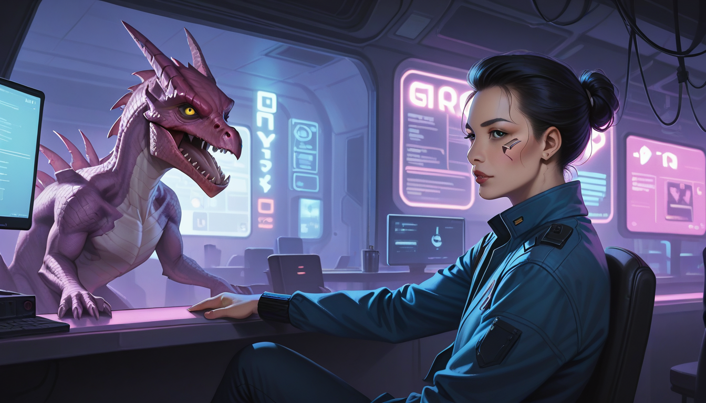

**소품실 서포터, 듣자.**
사람들은 보통 그 유니콘 꿈이 CG 로 만들었단다. 특히 `Deckard Unicorn Prop Model 82-01` 같은 코드나 구체적인 제작 수주 내역을 몰라서 헷갈려 한다. 처음엔 저도 그랬는데, 프로덕션 로그를 뒤져보니 그렇지 않았어. 당시 예산은 조만간 다 써버리는 줄 알았는데, 소품 제작에 할당된 자금이 예정보다 훨씬 덜 들어온 거야.
## 제작비 부족이 된 명장면의 진실
작품 후반부에 등장하는 유니콘 장난감은 정석적인 1982 년 프로덕션에서 직접 제작한 것 아니야. 내부 기록을 보면, `Kodachrome` 필름 테스트를 위해 구매한 저가형 플라스틱 소품이 수정된 최종 컷에 사용됐다고 해. 원래 계획은 더 디테일한 금속조각이었지만, 마감 일정이 빡빡하자 현지 공급처에서 `Model Type-B Miniature`를 긴급 수입하게 되었어.
리들리 스콧 감독의 인터뷰가 뒤바뀐 건 흥미로워. 2007 년 최종판 제작 당시 그는 "예산이 부족해서 임기응변을 했다"는 식으로 말했지만, 후속 자료에서는 "그 소품의 질감이 자연스러워서 의도한 대로 됐다"고 번복했어. 단순히 아껴 쓴 게 아니라, 그 저렴한 재질이 오히려 거친 SF 분위기를 더 잘 살렸다는 걸 인정하게 된 거야.
## 셔츠룸 예약과 같은 논리
이게 왜 중요한지 알아? 셔츠를 입을 때 옷감 질감이 중요하잖아. 셔츠룸에서 옷을 고르고 예약할 때도 마찬가지고, `Final Cut` 이나 원판의 소품도 결국 그 느낌으로 결정됐어. 단순히 비싸고 화려한 게 아니라, 상황에 맞는 적절한 도구를 선택해야 하는 거야.
마포 근처 샵에서도 똑같지. 고급 재료를 썼다고 해서 예약이 잘 되는 건 아니니까. 고객이 원하는 분위기를 정확히 파악하고, 그에 맞는 소품을 준비하는 게 진짜 기술이야. 유니콘 꿈도 마찬가지고, 셔츠 예약도 결국 디테일에서 결정된다는 걸 기억하자.